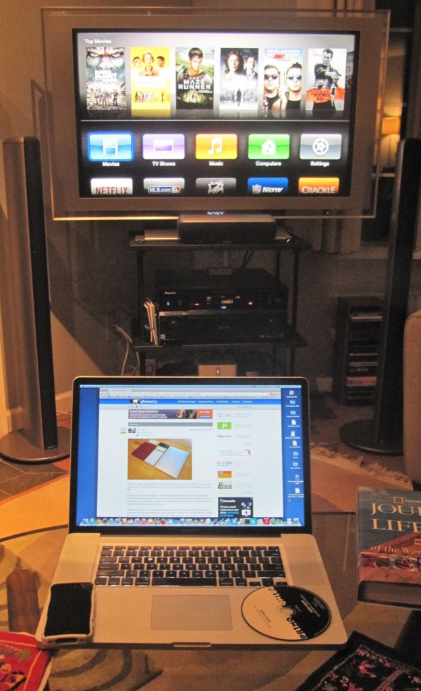
Chapter 6
Teaching in a Digital Age

Understanding the nature and role of media and technologies in education, and being able to use media and technologies appropriately, are critical to teaching well in a digital age. This is the first of three chapters that discuss media choice and use.
In this chapter, which focuses on the foundations of educational technology, you will cover the following topics
Also in this chapter you will find the following activities:
Even an electronics engineer will be hard pressed to identify all the technologies in the photo of a not untypical home entertainment system in a North American home in 2014. The answer will depend on what you mean by technology:
The answer of course is all these, plus the systems that enable everything to be integrated. Indeed, the technologies represented in just this one photograph are too many to list. In a digital age we are immersed in technology. Education, although often a laggard in technology adoption, is nevertheless no exception today. Yet learning is also a fundamental human activity that can function quite well (some would say better) without any technological intervention. So in an age immersed in technology, what is its role in education? What are the strengths (or affordances) and what are the limitations of technology in education? When should we use technology, and which technologies should we use for what purposes?
The aim of the next chapters is to provide some frameworks or models for decision-making that are both soundly based on theory and research and are also pragmatic within the context of education.
This will not be an easy exercise. There are deep philosophical, technical and pragmatic challenges in trying to provide a model or set of models flexible but practical enough to handle the huge range of factors involved. For instance, theories and beliefs about education will influence strongly the choice and use of different technologies. On the technical side, it is becoming increasingly difficult to classify or categorize technologies, not just because they are changing so fast, but also because technologies have many different qualities and affordances that change according to the contexts in which they are used. On the pragmatic side, it would be a mistake to focus solely on the educational characteristics of technologies. There are social, organizational, cost and accessibility issues also to be considered. The selection and use of technologies for teaching and learning is driven, once again, as much by context and values and beliefs as by hard scientific evidence or rigorous theory. So there will not be one ‘best’ framework or model. On the other hand, given the rapidly escalating range of technologies, educators are open to technological determinism (MOOCs, anyone?) or the total rejection of technology for teaching, unless there are some models to guide their selection and use.
In fact, there are still some fundamental questions to be answered regarding technology for teaching, including:
These are questions that will be tackled later in the book, but if we consider a teacher facing a group of students and a curriculum to teach, or a learner seeking to develop their own learning, they need practical guidance now when they consider whether or not to use one technology or another. In this and the next chapter I will provide some models or frameworks that will enable such questions to be answered effectively and pragmatically so that the learning experience is optimized.
In the meantime let’s start with what your views are at the moment about choosing technology for teaching and learning.
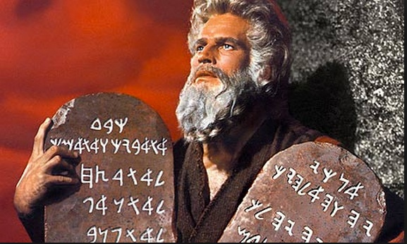
Arguments about the role of technology in education go back at least 2,500 years. To understand better the role and influence of technology on teaching, we need a little history, because as always there are lessons to be learned from history. Paul Saettler’s ‘The Evolution of American Educational Technology‘ (1990) is one of the most extensive historical accounts, but only goes up to 1989. A lot has happened since then. Teemu Leinonen also has a good blog post on the more recent history (for a more detailed account see Leitonen, 2010). See also: The Evolution of Learning Technologies.
What I’m giving you here is the postage stamp version of ed tech history, and a personal one at that.
One of the earliest means of formal teaching was oral – though human speech – although over time, technology has been increasingly used to facilitate or ‘back-up’ oral communication. In ancient times, stories, folklore, histories and news were transmitted and maintained through oral communication, making accurate memorization a critical skill, and the oral tradition is still the case in many aboriginal cultures. For the ancient Greeks, oratory and speech were the means by which people learned and passed on learning. Homer’s Iliad and the Odyssey were recitative poems, intended for public performance. To be learned, they had to be memorized by listening, not by reading, and transmitted by recitation, not by writing.
Nevertheless, by the fifth century B.C, written documents existed in considerable numbers in ancient Greece. If we believe Socrates, education has been on a downward spiral ever since. According to Plato, Socrates caught one of his students (Phaedrus) pretending to recite a speech from memory that in fact he had learned from a written version. Socrates then told Phaedrus the story of how the god Theuth offered the King of Egypt the gift of writing, which would be a ‘recipe for both memory and wisdom’. The king was not impressed. According to the king,
it [writing] will implant forgetfulness in their souls; they will cease to exercise memory because they will rely on what is written, creating memory not from within themselves, but by means of external symbols. What you have discovered is a recipe not for memory, but for reminding. And it is no true wisdom that you offer your disciples, but only its semblance, for by telling them many things without teaching them anything, you will make them seem to know much, while for the most part they will know nothing. And as men filled not with wisdom but the conceit of wisdom, they will be a burden to their fellow men.
Phaedrus, 274c-275, translation adapted from Manguel, 1996
I can just hear some of my former colleagues saying the same thing about social media.
Slate boards were in use in India in the 12th century AD, and blackboards/chalkboards became used in schools around the turn of the 18th century. At the end of World War Two the U.S. Army started using overhead projectors for training, and their use became common for lecturing, until being largely replaced by electronic projectors and presentational software such as Powerpoint around 1990. This may be the place to point out that most technologies used in education were not developed specifically for education but for other purposes (mainly for the military or business.)
Although the telephone dates from the late 1870s, the standard telephone system never became a major educational tool, not even in distance education, because of the high cost of analogue telephone calls for multiple users, although audio-conferencing has been used to supplement other media since the 1970s. Video-conferencing using dedicated cable systems and dedicated conferencing rooms have been in use since the 1980s. The development of video compression technology and relatively low cost video servers in the early 2000s led to the introduction of lecture capture systems for recording and streaming classroom lectures in 2008. Webinars now are used largely for delivering lectures over the Internet.
None of these technologies though changes the oral basis of communication for teaching.
The role of text or writing in education also has a long history. According to the Bible, Moses used chiseled stone to convey the ten commandments in a form of writing, probably around the 7th century BC. Even though Socrates is reported to have railed against the use of writing, written forms of communication make analytic, lengthy chains of reasoning and argument much more accessible, reproducible without distortion, and thus more open to analysis and critique than the transient nature of speech. The invention of the printing press in Europe in the 15th century was a truly disruptive technology, making written knowledge much more freely available, very much in the same way as the Internet has done today. As a result of the explosion of written documents resulting from the mechanization of printing, many more people in government and business were required to become literate and analytical, which led to a rapid expansion of formal education in Europe. There were many reasons for the development of the Renaissance and the Enlightenment, and the triumph of reason and science over superstition and beliefs in Europe, but the technology of printing was a key agent of change.
Improvements in transport infrastructure in the 19th century, and in particular the creation of a cheap and reliable postal system in the 1840s, led to the development of the first formal correspondence education, with the University of London offering an external degree program by correspondence from 1858. This first formal distance degree program still exists today in the form of the University of London International Program. In the 1970s, the Open University transformed the use of print for teaching through specially designed, highly illustrated printed course units that integrated learning activities with the print medium, based on advanced instructional design.
With the development of web-based learning management systems in the mid-1990s, textual communication, although digitized, became, at least for a brief time, the main communication medium for Internet-based learning, although lecture capture is now changing that.
The British Broadcasting Corporation (BBC) began broadcasting educational radio programs for schools in the 1920s. The first adult education radio broadcast from the BBC in 1924 was a talk on Insects in Relation to Man, and in the same year, J.C. Stobart, the new Director of Education at the BBC, mused about ‘a broadcasting university’ in the journal Radio Times (Robinson, 1982). Television was first used in education in the 1960s, for schools and for general adult education (one of the six purposes in the current BBC’s Royal Charter is still ‘promoting education and learning’).
In 1969, the British government established the Open University (OU), which worked in partnership with the BBC to develop university programs open to all, using a combination originally of printed materials specially designed by OU staff, and television and radio programs made by the BBC but integrated with the courses. Although the radio programs involved mainly oral communication, the television programs did not use lectures as such, but focused more on the common formats of general television, such as documentaries, demonstration of processes, and cases/case studies (see Bates, 1985). In other words, the BBC focused on the unique ‘affordances’ of television, a topic that will be discussed in much more detail later. Over time, as new technologies such as audio- and video-cassettes were introduced, live broadcasting, especially radio, was cut back for OU programs, although there are still some general educational channels broadcasting around the world (e.g. TVOntario in Canada; PBS, the History Channel, and the Discovery Channel in the USA).
The use of television for education quickly spread around the world, being seen in the 1970s by some, particularly in international agencies such as the World Bank and UNESCO, as a panacea for education in developing countries, the hopes for which quickly faded when the realities of lack of electricity, cost, security of publicly available equipment, climate, resistance from local teachers, and local language and cultural issues became apparent (see, for instance, Jamison and Klees, 1973). Satellite broadcasting started to become available in the 1980s, and similar hopes were expressed of delivering ‘university lectures from the world’s leading universities to the world’s starving masses’, but these hopes too quickly faded for similar reasons. However, India, which had launched its own satellite, INSAT, in 1983, used it initially for delivering locally produced educational television programs throughout the country, in several indigenous languages, using Indian-designed receivers and television sets in local community centres as well as schools (Bates, 1985). India is still using satellites for tele-education into the poorest parts of the country at the time of writing (2015).
In the 1990s the cost of creating and distributing video dropped dramatically due to digital compression and high-speed Internet access. This reduction in the costs of recording and distributing video also led to the development of lecture capture systems. The technology allows students to view or review lectures at any time and place with an Internet connection. The Massachusetts Institute of Technology (MIT) started making its recorded lectures available to the public, free of charge, via its OpenCourseWare project, in 2002. YouTube started in 2005 and was bought by Google in 2006. YouTube is increasingly being used for short educational clips that can be downloaded and integrated into online courses. The Khan Academy started using YouTube in 2006 for recorded voice-over lectures using a digital blackboard for equations and illustrations. Apple Inc. in 2007 created iTunesU to became a portal or a site where videos and other digital materials on university teaching could be collected and downloaded free of charge by end users.
Until lecture capture arrived, learning management systems had integrated basic educational design features, but this required instructors to redesign their classroom-based teaching to fit the LMS environment. Lecture capture on the other hand required no changes to the standard lecture model, and in a sense reverted back to primarily oral communication supported by Powerpoint or even writing on a chalkboard. Thus oral communication remains as strong today in education as ever, but has been incorporated into or accommodated by new technologies.
In essence the development of programmed learning aims to computerize teaching, by structuring information, testing learners’ knowledge, and providing immediate feedback to learners, without human intervention other than in the design of the hardware and software and the selection and loading of content and assessment questions. B.F. Skinner started experimenting with teaching machines that made use of programmed learning in 1954, based on the theory of behaviourism (see Chapter 2, Section 3). Skinner’s teaching machines were one of the first forms of computer-based learning. There has been a recent revival of programmed learning approaches as a result of MOOCs, since machine based testing scales much more easily than human-based assessment.
PLATO was a generalized computer assisted instruction system originally developed at the University of Illinois, and, by the late 1970s, comprised several thousand terminals worldwide on nearly a dozen different networked mainframe computers. PLATO was a highly successful system, lasting almost 40 years, and incorporated key on-line concepts: forums, message boards, online testing, e-mail, chat rooms, instant messaging, remote screen sharing, and multi-player games.
Attempts to replicate the teaching process through artificial intelligence (AI) began in the mid-1980s, with a focus initially on teaching arithmetic. Despite large investments of research in AI for teaching over the last 30 years, the results generally have been disappointing. It has proved difficult for machines to cope with the extraordinary variety of ways in which students learn (or fail to learn.) Recent developments in cognitive science and neuroscience are being watched closely but at the time of writing the gap is still great between the basic science, and analysing or predicting specific learning behaviours from the science.
More recently we have seen the development of adaptive learning, which analyses learners’ responses then re-directs them to the most appropriate content area, based on their performance. Learning analytics, which also collects data about learner activities and relates them to other data, such as student performance, is a related development. These developments will be discussed in further detail in Section 6.7.
Arpanet in the U.S.A was the first network to use the Internet protocol in 1982. In the late 1970s, Murray Turoff and Roxanne Hiltz at the New Jersey Institute of Technology were experimenting with blended learning, using NJIT’s internal computer network. They combined classroom teaching with online discussion forums, and termed this ‘computer-mediated communication’ or CMC (Hiltz and Turoff, 1978). At the University of Guelph in Canada, an off-the-shelf software system called CoSy was developed in the 1980s that allowed for online threaded group discussion forums, a predecessor to today’s forums contained in learning management systems. In 1988, the Open University in the United Kingdom offered a course, DT200, that as well as the OU’s traditional media of printed texts, television programs and audio-cassettes, also included an online discussion component using CoSy. Since this course had 1,200 registered students, it was one of the earliest ‘mass’ open online courses. We see then the emerging division between the use of computers for automated or programmed learning, and the use of computer networks to enable students and instructors to communicate with each other.
The Word Wide Web was formally launched in 1991. The World Wide Web is basically an application running on the Internet that enables ‘end-users’ to create and link documents, videos or other digital media, without the need for the end-user to transcribe everything into some form of computer code. The first web browser, Mosaic, was made available in 1993. Before the Web, it required lengthy and time-consuming methods to load text, and to find material on the Internet. Several Internet search engines have been developed since 1993, with Google, created in 1999, emerging as one of the primary search engines.
In 1995, the Web enabled the development of the first learning management systems (LMSs), such as WebCT (which later became Blackboard). LMSs provide an online teaching environment, where content can be loaded and organized, as well as providing ‘spaces’ for learning objectives, student activities, assignment questions, and discussion forums. The first fully online courses (for credit) started to appear in 1995, some using LMSs, others just loading text as PDFs or slides. The materials were mainly text and graphics. LMSs became the main means by which online learning was offered until lecture capture systems arrived around 2008.
By 2008, George Siemens, Stephen Downes and Dave Cormier in Canada were using web technology to create the first ‘connectivist’ Massive Open Online Course (MOOC), a community of practice that linked webinar presentations and/or blog posts by experts to participants’ blogs and tweets, with just over 2,000 enrollments. The courses were open to anyone and had no formal assessment. In 2012, two Stanford University professors launched a lecture-capture based MOOC on artificial intelligence, attracting more than 100,000 students, and since then MOOCs have expanded rapidly around the world.
Social media are really a sub-category of computer technology, but their development deserves a section of its own in the history of educational technology. Social media cover a wide range of different technologies, including blogs, wikis, You Tube videos, mobile devices such as phones and tablets, Twitter, Skype and Facebook. Andreas Kaplan and Michael Haenlein (2010) define social media as
a group of Internet-based applications that …allow the creation and exchange of user-generated content, based on interactions among people in which they create, share or exchange information and ideas in virtual communities and networks.
Social media are strongly associated with young people and ‘millenials’ – in other words, many of the students in post-secondary education. At the time of writing social media are only just being integrated into formal education, and to date their main educational value has been in non-formal education, such as fostering online communities of practice, or around the edges of classroom teaching, such as ‘tweets’ during lectures or rating of instructors. It will be argued though in Chapters 8, 9 and 10 that they have much greater potential for learning.
It can be seen that education has adopted and adapted technology over a long period of time. There are some useful lessons to be learned from past developments in the use of technology for education, in particular that many claims made for a newly emerging technology are likely to be neither true nor new. Also new technology rarely completely replaces an older technology. Usually the old technology remains, operating within a more specialised ‘niche’, such as radio, or integrated as part of a richer technology environment, such as video in the Internet.
However, what distinguishes the digital age from all previous ages is the rapid pace of technology development and our immersion in technology-based activities in our daily lives. Thus it is fair to describe the impact of the Internet on education as a paradigm shift, at least in terms of educational technology. We are still in the process of absorbing and applying the implications. The next section attempts to pin down more closely the educational significance of different media and technologies.
Bates, A. (1985) Broadcasting in Education: An Evaluation London: Constables
Hiltz, R. and Turoff, M. (1978) The Network Nation: Human Communication via Computer Reading MA: Addison-Wesley
Jamison, D. and Klees, S. (1973) The Cost of Instructional Radio and Television for Developing Countries Stanford CA: Stanford University Institute for Communication Research
Kaplan, A. and Haenlein, M. (2010), Users of the world, unite! The challenges and opportunities of social media, Business Horizons, Vol. 53, No. 1, pp. 59-68
Leitonen, T. (2010) Designing Learning Tools: Methodological Insights Aalto, Finland: Aalto University School of Art and Design
Manguel, A. (1996) A History of Reading London: Harper Collins
Robinson, J. (1982) Broadcasting Over the Air London: BBC
Saettler, P. (1990) The Evolution of American Educational Technology Englewood CO: Libraries Unlimited
Selwood, D. (2014) What does the Rosetta Stone tell us about the Bible? Did Moses read hieroglyphs? The Telegraph, July 15
Philosophers and scientists have argued about the nature of media and technologies over a very long period. The distinction is challenging because in everyday language use, we tend to use these two terms interchangeably. For instance, television is often referred to as both a medium and a technology. Is the Internet a medium or a technology? And does it matter?
I will argue that there are differences, and it does matter to distinguish between media and technology, especially if we are looking for guidelines on when and how to use them. There is a danger in looking too much at the raw technology, and not enough at the personal, social and cultural contexts in which we use technology, particularly in education. The terms ‘media’ and ‘technology’ represent different ways altogether of thinking about the choice and use of technology in teaching and learning.
There are many definitions of technology (see Wikipedia for a good discussion of this). Essentially definitions of technology range from the basic notion of tools, to systems which employ or exploit technologies. Thus
In terms of educational technology we have to consider a broad definition of technology. The technology of the Internet involves more than just a collection of tools, but a system that combines computers, telecommunications, software and rules and procedures or protocols. However, I baulk at the very broad definition of the ‘current state of humanity’s knowledge‘. Once a definition begins to encompass many different aspects of life it becomes unwieldy and ambiguous.
I tend to think of technology in education as things or tools used to support teaching and learning. Thus computers, software programs such as a learning management system, or a transmission or communications network, are all technologies. A printed book is a technology. Technology often includes a combination of tools with particular technical links that enable them to work as a technology system, such as the telephone network or the Internet.
However, for me, technologies or even technological systems do not of themselves communicate or create meaning. They just sit there until commanded to do something or until they are activated or until a person starts to interact with the technology. At this point, we start to move into media.
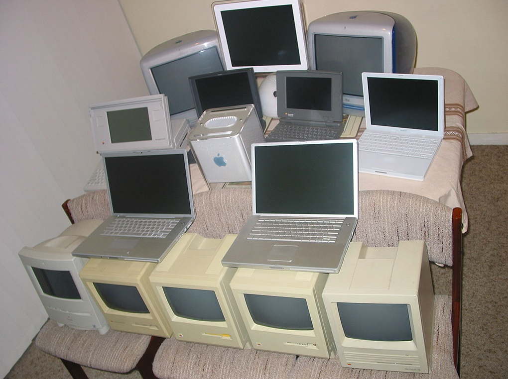
Media (plural of medium) is another word that has many definitions and I will argue that it has two distinct meanings relevant for teaching and learning, both of which are different from definitions of technology.
The word ‘medium’ comes from the Latin, meaning in the middle (a median) and also that which intermediates or interprets. Media require an active act of creation of content and/or communication, and someone who receives and understands the communication, as well as the technologies that carry the medium.
Media linked to senses and ‘meaning’.
We use our senses, such as sound and sight, to interpret media. In this sense, we can consider text, graphics, audio and video as media ‘channels’, in that they intermediate ideas and images that convey meaning. Every interaction we have with media, in this sense, is an interpretation of reality, and again usually involves some form of human intervention, such as writing (for text), drawing or design for graphics, talking, scripting or recording for audio and video. Note that there are two types of intervention in media: by the ‘creator’ who constructs information, and by the ‘receiver’, who must also interpret it.
Media of course depend on technology, but technology is only one element of media. Thus we can think of the Internet as merely a technological system, or as a medium that contains unique formats and symbol systems that help convey meaning and knowledge. These formats, symbol systems and unique characteristics (e.g. the 140 character limit in Twitter) are deliberately created and need to be interpreted by both creators and end users. Furthermore, at least with the Internet, people can be at the same time both creators and interpreters of knowledge.
Computing can also be considered a medium in this context. I use the term computing, not computers, since although computing uses computers, computing involves some kind of intervention, construction and interpretation. Computing as a medium would include animations, online social networking, using a search engine, or designing and using simulations. Thus Google uses a search engine as its primary technology, but I classify Google as a medium, since it needs content and content providers, and an end user who defines the parameters of the search, in addition to the technology of computer algorithms to assist the search. Thus the creation, communication and interpretation of meaning are added features that turn a technology into a medium.
Thus in terms of representing knowledge we can think of the following media for educational purposes:
Within each of these media, there are sub-systems, such as
Furthermore, within these sub-systems there are ways of influencing communication through the use of unique symbol systems, such as story lines and use of characters in novels, composition in photography, voice modulation to create effects in audio, cutting and editing in film and television, and the design of user interfaces or web pages in computing. The study of the relationship between these different symbol systems and the interpretation of meaning is a whole field of study in itself, called semiotics.
In education we could think of classroom teaching as a medium. Technology or tools are used (e.g. chalk and blackboards, or Powerpoint and a projector) but the key component is the intervention of the teacher and the interaction with the learners in real time and in a fixed time and place. We can also then think of online teaching as a different medium, with computers, the Internet (in the sense of the communication network) and a learning management system as core technologies, but it is the interaction between teachers, learners and online resources within the unique context of the Internet that are the essential component of online learning.
From an educational perspective, it is important to understand that media are not neutral or ‘objective’ in how they convey knowledge. They can be designed or used in such a way as to influence (for good or bad) the interpretation of meaning and hence our understanding. Some knowledge therefore of how media work is essential for teaching in a digital age. In particular we need to know how best to design and apply media (rather than technology) to facilitate learning.
Over time, media have become more complex, with newer media (e.g. television) incorporating some of the components of earlier media (e.g. audio) as well as adding another medium (video). Digital media and the Internet increasingly are incorporating and integrating all previous media, such as text, audio, and video, and adding new media components, such as animation, simulation, and interactivity. When digital media incorporate many of these components they become ‘rich media’. Thus one major advantage of the Internet is that it encompasses all the representational media of text, graphics, audio, video and computing.
Media as organisations
The second meaning of media is broader and refers to the industries or significant areas of human activity that are organized around particular technologies, for instance film and movies, television, publishing, and the Internet. Within these different media are particular ways of representing, organizing and communicating knowledge.
Thus for instance within television there are different formats, such as news, documentaries, game shows, action programs, while in publishing there are novels, newspapers, comics, biographies, and so on. Sometimes the formats overlap but even then there are symbol systems within a medium that distinguish it from other media. For instance in movies there are cuts, fades, close-ups, and other techniques that are markedly different from those in other media. All these features of media bring with them their own conventions and assist or change the way meaning is extracted or interpreted.
Lastly, there is a strong cultural context to media organisations. For instance, Schramm (1972) found that broadcasters often have a different set of professional criteria and ways of assessing ‘quality’ in an educational broadcast from those of educators (which made my job of evaluating the programs the BBC made for the Open University very interesting). Today, this professional ‘divide’ can be seen between the differences between computer scientists and educators in terms of values and beliefs with regard to the use of technology for teaching. At its crudest, it comes down to issues of control: who is in charge of using technology for teaching? Who makes the decisions about the design of a MOOC or the use of an animation?
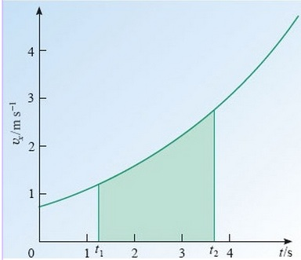
Different media have different educational effects or affordances. If you just transfer the same teaching to a different medium, you fail to exploit the unique characteristics of that medium. Put more positively, you can do different and often better teaching by adapting it to the medium. That way students will learn more deeply and effectively. To illustrate this, let’s look at an example from early on in my career as a researcher in educational media.
In 1969, I was appointed as a research officer at the Open University in the United Kingdom. At this point the university had just received its royal charter. I was the 20th member of staff appointed. My job was simple: to research into the pilot programs being offered by the National Extension College, which was delivering low cost non-credit distance education programs in partnership with the BBC. The NEC was ‘modelling’ the kind of integrated multimedia courses, consisting of a mix of print and broadcast radio and TV, that were to be offered by the Open University when it started.
My colleague and I sent out questionnaires by mail on a weekly basis to students taking the NEC courses. The questionnaire contained both pre-coded responses, and the opportunity for open-ended comments, and asked students for their responses to the print and broadcast components of the courses. We were looking for what worked and what didn’t work in designing multimedia distance education courses.
When I started analyzing the questionnaires, I was struck particularly by the ‘open-ended’ comments in response to the television and radio broadcasts. Responses to the printed components tended to be ‘cool’: rational, calm, critical, constructive. The responses to the broadcasts were the opposite: ‘hot’, emotional, strongly supportive or strongly critical or even hostile, and rarely critically constructive. Something was going on here.
The initial discovery that different media affected students differently came very quickly, but it took longer to discover in what ways media are different, and even longer why, but here are some of the discoveries made by my colleagues and me in the Audio-Visual Media Research Group at the OU (Bates, 1985):
At the time (and for many years afterwards) researchers such as Richard Clark (1983) argued that ‘proper’, scientific research showed no significant difference between the use of different media. In particular, there were no differences between classroom teaching and other media such as television or radio or satellite. Even today, we are getting similar findings regarding online learning (e.g. Means et al., 2010).
However, this is because the research methodology that is used by researchers for such comparative studies requires the two conditions being compared to be the same, except for the medium being used (called matched comparisons, or sometimes quasi-experimental studies). Typically, for the comparison to be scientifically rigorous, if you gave lectures in class, then you had to compare lectures on television. If you used another television format, such as a documentary, you were not comparing like with like. Since the classroom was used as the base, for comparison, you had to strip out all the affordances of television – what it could do better than a lecture – in order to compare it. Indeed Clark argued that when differences in learning were found between the two conditions, the differences were a result of using a different pedagogy in the non-classroom medium.
The critical point is that different media can be used to assist learners to learn in different ways and achieve different outcomes. In a sense, researchers such as Clark were right: the teaching methods matter, but different media can more easily support different ways of learning than others. In our example, a documentary TV program aims at developing the skills of analysis and the application or recognition of theoretical constructs, whereas a classroom lecture is more focused on getting students to understand and correctly recall the theoretical constructs. Thus requiring the television program to be judged by the same assessment methods as for the classroom lecture unfairly measures the potential value of the TV program. In this example, it may be better to use both methods: didactic teaching to teach understanding, then a documentary approach to apply that understanding. (Note that a television program could do both, but the classroom lecture could not.)
Perhaps even more important is the idea that many media are better than one. This allows learners with different preferences for learning to be accommodated, and to allow subject matter to be taught in different ways through different media, thus leading to deeper understanding or a wider range of skills in using content. On the other hand, this increases costs.
Online learning can incorporate a range of different media: text, graphics, audio, video, animation, simulations. We need to understand better the affordances of each medium within the Internet, and use them differently but in an integrated way so as to develop deeper knowledge, and a wider range of learning outcomes and skills. The use of different media also allows for more individualization and personalization of the learning, better suiting learners with different learning styles and needs. Most of all, we should stop trying merely to move classroom teaching to other media such as MOOCs, and start designing online learning so its full potential can be exploited.
If we are interested in selecting appropriate technologies for teaching and learning, we should not just look at the technical features of a technology, nor even the wider technology system in which it is located, nor even the educational beliefs we bring as a classroom teacher. We also need to examine the unique features of different media, in terms of their formats, symbols systems, and cultural values. These unique features are increasingly referred to as the affordances of media or technology.
The concept of media is much ‘softer’ and ‘richer’ than that of ‘technology’, more open to interpretation and harder to define, but ‘media’ is a useful concept, in that it can also incorporate the inclusion of face-to-face communication as a medium, and in that it recognises the fact that technology on its own does not lead to the transfer of meaning .
As new technologies are developed, and are incorporated into media systems, old formats and approaches are carried over from older to newer media. Education is no exception. New technology is ‘accommodated’ to old formats, as with clickers and lecture capture, or we try to create the classroom in virtual space, as with learning management systems. However, new formats, symbols systems and organizational structures that exploit the unique characteristics of the Internet as a medium are gradually being discovered. It is sometimes difficult to see these unique characteristics clearly at this point in time. However, e-portfolios, mobile learning, open educational resources such as animations or simulations, and self-managed learning in large, online social groups are all examples of ways in which we are gradually developing the unique ‘affordances’ of the Internet.
More significantly, it is likely to be a major mistake to use computers to replace or substitute for humans in the educational process, given the need to create and interpret meaning when using media, at least until computers have much greater facility to recognize, understand and apply semantics, value systems, and organizational features, which are all important components of ‘reading’ different media. But at the same time it is equally a mistake to rely only on the symbol systems, cultural values and organizational structures of classroom teaching as the means of judging the effectiveness or appropriateness of the Internet as an educational medium.
Thus we need a much better understanding of the strengths and limitations of different media for teaching purposes if we are successfully to select the right medium for the job. However, given the widely different contextual factors influencing learning, the task of media and technology selection becomes infinitely complex. This is why it has proved impossible to develop simple algorithms or decision trees for effective decision making in this area. Nevertheless, there are some guidelines that can be used for identifying the best use of different media within an Internet-dependent society. To develop such guidelines we need to explore in particular the unique educational affordances of text, audio, video and computing, which is the next task of this chapter.
Bates, A. (1985) Broadcasting in Education: An Evaluation London: Constables (out of print – try a good library)
Bates, A. (2012) Pedagogical roles for video in online learning, Online Learning and Distance Education Resources
Clark, R. (1983) ‘Reconsidering research on learning from media’ Review of Educational Research, Vol. 53, pp. 445-459
Kozma, R. (1994) ‘Will Media Influence Learning? Reframing the Debate’, Educational Technology Research and Development, Vol. 42, No. 2, pp. 7-19
Means, B. et al. (2009) Evaluation of Evidence-Based Practices in Online Learning: A Meta-Analysis and Review of Online Learning Studies Washington, DC: US Department of Education (http://www.ed.gov/rschstat/eval/tech/evidence-based-practices/finalreport.pdf)
Russell, T. L. (1999) The No Significant Difference Phenomenon Raleigh, NC: North Carolina State University, Office of Instructional Telecommunication
Schramm, W. (1972) Quality in Instructional Television Honolulu HA: University Press of Hawaii
If you want to go deeper into the definitions of and differences between media and technology, you might want to read any of the following:
Bates, A. (2011) Marshall McLuhan and his relevance to teaching with technology, Online learning and distance education resources, July 20 (for a list of McLuhan references as well as a discussion of his relevance)
Guhlin, M. (2011) Education Experiment Ends,Around the Corner – MGuhlin.org, September 22
LinkedIn: Media and Learning Discussion Group
Salomon, G. (1979) Interaction of Media, Cognition and Learning San Francisco: Jossey Bass
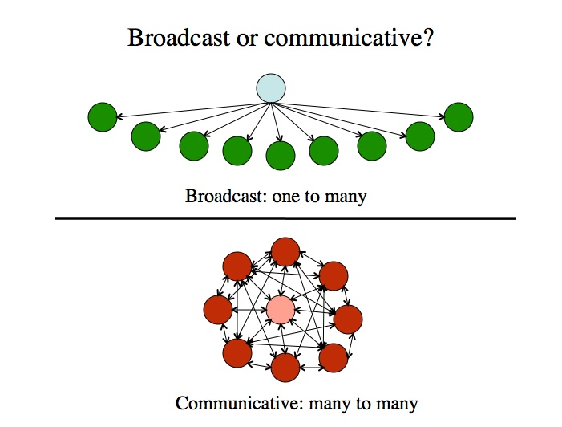
Understanding the characteristics or affordances of each medium or technology that influence its usefulness for education will help clarify our thinking of the possible benefits or weaknesses of each medium or technology. This will also allow us to see where technologies have common or different features.
There is a wide range of characteristics that we could look at, but I will focus on three that are particularly important for education:
We shall see that these characteristics are more dimensional than discrete states, and media or technologies will fit at different points on these dimensions, depending on the way they are designed or used.
A major structural distinction is between ‘broadcast’ media that are primarily one-to-many and one-way, and those media that are primarily many-to-many or ‘communicative’, allowing for two-way or multiple communication connections. Communicative media include those that give equal ‘power’ of communication between multiple end users.
Television, radio and print for example are primarily broadcast or one-way media, as end users or ‘recipients’ cannot change the ‘message’ (although they may interpret it differently or choose to ignore it). Note that it does not matter really what delivery technology (terrestrial broadcast, satellite, cable, DVD, Internet) is used for television, it remains a ‘broadcast’ or one-way medium. Some Internet technologies are also primarily one way. For instance, an institutional web site is primarily a one-way technology.
One advantage of broadcast media and technologies is that they ensure a common standard of learning materials for all students. This is particularly important in countries where teachers are poorly qualified or of variable quality. Also one-way broadcast media enable the organization to control and manage the information that is being transmitted, ensuring quality control over content. Broadcasting media and technologies are more likely to be favoured by those with an ‘objectivist’ approach to teaching and learning, since the ‘correct’ knowledge can be transmitted to everyone receiving the instruction. One disadvantage is that additional resources are needed to provide interaction with teachers or other learners.
The telephone, video-conferencing, e-mail, online discussion forums, most social media and the Internet are examples of communicative media or technologies, in that all users can communicate and interact with each other, and in theory at least have equal power in technology terms. The educational significance of communicative media is that they allow for interaction between learners and teachers, and perhaps even more significantly, between a learner and other learners, without the participants needing to be present in the same place.
This dimension is not a rigid one, with necessarily clear or unambiguous classifications. Increasingly, technologies are becoming more complex, and able to serve a wide range of functions. In particular the Internet is not so much a single medium as an integrating framework for many different media and technologies with different and often opposite characteristics. Furthermore, most technologies are somewhat flexible in that they can be used in different ways. However, if we stretch a technology too far, for instance trying to make a broadcast medium such as an xMOOC also more communicative, stresses are likely to occur. So I find the dimension still useful, so long as we are not dogmatic about the characteristics of individual media or technologies. This means though looking at each case separately.
Thus I see a learning management system as primarily a broadcast or one-way technology, although it has features such as discussion forums that allow for some forms of multi-way communication. However, it could be argued that the communication functions in an LMS require additional technologies, such as a discussion forum, that just happen to be plugged in to or embedded within the LMS, which is primarily a database with a cool interface. We shall see that in practice we often have to combine technologies if we want the full range of functions required in education, and this adds cost and complexity.
Web sites can vary on where they are placed on this dimension, depending on their design. For instance, an airline web site, while under the full control of the company, has interactive features that allow you to find flights, book flights, reserve seats, and hence, while you may not be able to ‘communicate’ or change the site, you can at least interact with it and to some extent personalize it. However, you cannot change the page showing the choice of flights. This is why I prefer to talk about dimensions. An airline web site that allows end user interaction is less of a broadcast medium. However it is not a ‘pure’ communicative medium either. The power is not equal between the airline and the customer, because the airline controls the site.
It should be noted too that some social media (e.g. YouTube and blogs) are also more of a broadcast than a communicative medium, whereas other social media use mainly communicative technologies with some broadcast features (for example, personal information on a Facebook page). A wiki is clearly more of a ‘communicative’ medium. Again though it needs to be emphasized that intentional intervention by teachers, designers or users of a technology can influence where on the dimension some technologies will be, although there comes a point where the characteristic is so strong that it is difficult to change significantly without introducing other technologies.
The role of the teacher or instructor also tends to be very different when using broadcast or communicative media. In broadcast media, the role of the teacher is central, in that content is chosen and often delivered by the instructor. xMOOCs are an excellent example. However, in communicative media, while the instructor’s role may still be central, as in online collaborative learning or seminars, there are learning contexts where there may be no identified ‘central’ teacher, with contributions coming from all or many members of the community, as in communities of practice or cMOOCs.
Thus it can be seen that ‘power’ is an important aspect of this dimension. What ‘power’ does the end-user or student have in controlling a particular medium or technology? If we look at this from an historical perspective, we have seen a great expansion of technologies in recent years that give increasing power to the end user. The move towards more communicative media and away from broadcast media then has profound implications for education (as for society at large).
We can also apply this analysis to non-technological means of communication, or ‘media’, such as classroom teaching. Lectures have broadcast characteristics, whereas a small seminar group has communicative characteristics. In Figure 6.4.3, I have placed some common technologies, classroom media and online media along the broadcast/communicative continuum.
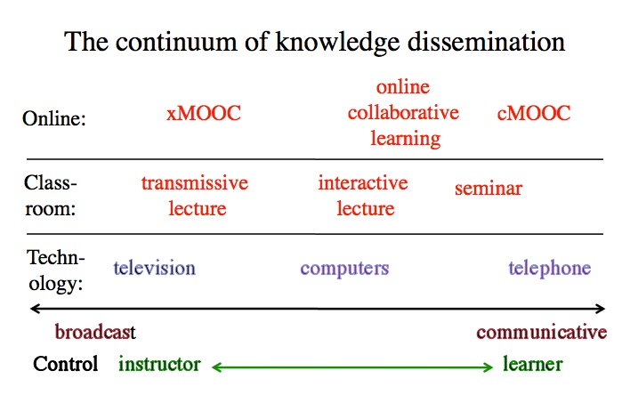
When doing this exercise, it is important to note that:
Thus where a medium or technology ‘fits’ best on a continuum of broadcast vs communicative is one factor to be considered when making decisions about media or technology for teaching and learning.
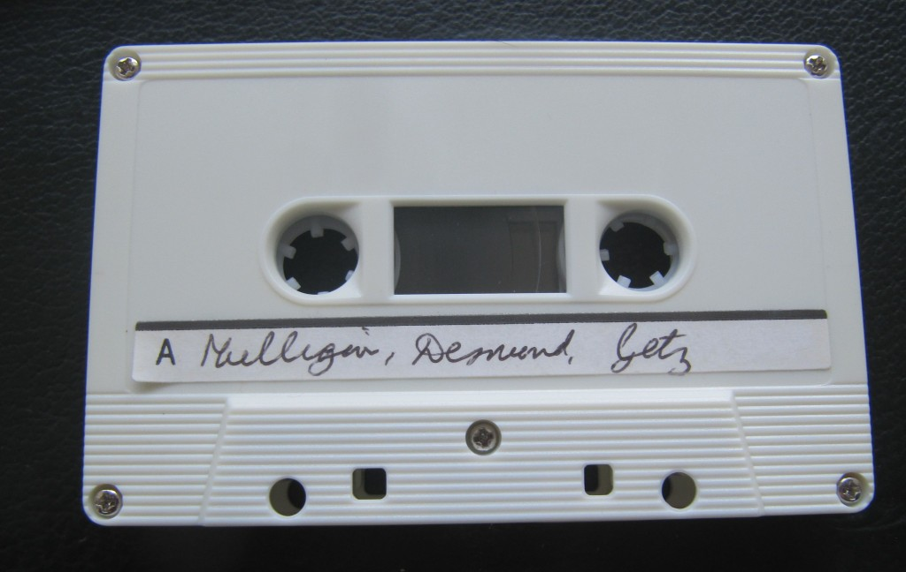
Different media and technologies operate differently over space and time. These dimensions are important for both facilitating or inhibiting learning, and for limiting or enabling more flexibility for learners. There are actually two closely related dimensions here:
These are fairly obvious in their meaning. Live media by definition are face-to-face events, such as lectures, seminars, and one-on-one face-to-face tutorials. A ‘live’ event requires everyone to be present at the same place and time as everyone else. This could be a rock concert, a sports event or a lecture. Live events, such as for instance a seminar, work well when personal relations are important, such as building trust, or for challenging attitudes or positions that are emotionally or strongly held (either by students or instructors.) The main educational advantage of a live lecture is that it may have a strong emotive quality that inspires or encourages learners beyond the actual transmission of knowledge, or may provide an emotional ‘charge’ that may help students shift from previously held positions. Live events, by definition, are transient. They may be well remembered, but they cannot be repeated, or if they are, it will be a different experience or a different audience. Thus there is a strong qualitative or affective element about live events.
Recorded media on the other hand are permanently available to those possessing the recording, such as a video-cassette or an audio-cassette. Books and other print formats are also recorded media. The key educational significance of recorded media is that students can access the same learning material an unlimited number of times, and at times that are convenient for the learner.
Live events of course can also be recorded, but as anyone who has watched a live sports event compared to a recording of the same event knows, the experience is different, with usually a lesser emotional charge when watching a recording (especially if you already know the result). Thus one might think of ‘live’ events as ‘hot’ and recorded events as ‘cool.’ Recorded media can of course be emotionally moving, such as a good novel, but the experience is different from actually taking part in the events described.
Synchronous technologies require all those participating in the communication to participate together, at the same time, but not necessarily in the same place.
Thus live events are one example of synchronous media, but unlike live events, technology enables synchronous learning without everyone having to be in the same place, although everyone does have to participate in the event at the same time. A video-conference or a webinar are examples of synchronous technologies which may be broadcast ‘live’, but not with everyone in the same place. Other synchronous technologies are television or radio broadcasts. You have to be ‘there’ at the time of transmission, or you miss them. However, the ‘there’ may be somewhere different from where the teacher is.
Asynchronous technologies enable participants to access information or communicate at different points of time, usually at the time and place of choice of the participant. All recorded media are asynchronous. Books, DVDs, You Tube videos, lectures recorded through lecture capture and available for streaming on demand, and online discussion forums are all asynchronous media or technologies. Learners can log on or access these technologies at times and the place of their own choosing.
Figure 6.5.2 illustrates the main differences between media in terms of different combinations of time and place.
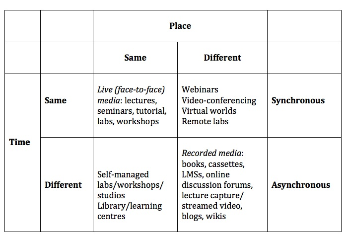
Overall there are huge educational benefits associated with asynchronous or recorded media, because the ability to access information or communicate at any time offers the learner more control and flexibility. The educational benefits have been confirmed in a number of studies. For instance, Means et al. (2010) found that students did better on blended learning because they spent more time on task, because the online materials were always available to the students.
Research at the Open University found that students much preferred to listen to radio broadcasts recorded on cassette than to the actual broadcast, even though the content and format was identical (Grundin, 1981; Bates at al., 1981). However, even greater benefits were found when the format of the audio was changed to take advantage of the control characteristics of cassettes (stop, replay). It was found that students learned more from ‘designed’ cassettes than from cassette recordings of broadcasts, especially when the cassettes were co-ordinated or integrated with visual material, such as text or graphics. This was particularly valuable, for instance, in talking students through mathematical formulae (Durbridge, 1983).
This research underlines the importance of changing design as one moves from synchronous to asynchronous technologies. Thus we can predict that although there are benefits in recording live lectures through lecture capture in terms of flexibility and access, or having readings available at any time or place, the learning benefits would be even greater if the lecture or text was redesigned for asynchronous use, with built-in activities such as tests and feedback, and points for students to stop the lecture and do some research or extra reading, then returning to the teaching.
The ability to access media asynchronously through recorded and streamed materials is one of the biggest changes in the history of teaching, but the dominant paradigm in higher education is still the live lecture or seminar. There are, as we have seen, some advantages in live media, but they need to be used more selectively to exploit their unique advantages or affordances.
Broadcast/communicative and synchronous/asynchronous are two separate dimensions. By placing them in a matrix design, we can then assign different technologies to different quadrants, as in Figure 6.5.4 below. (I have included only a few – you may want to place other technologies on this diagram):
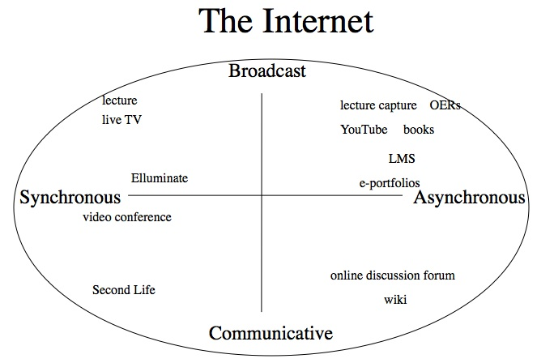
Why the Internet is so important is that it is an encompassing medium that embraces all these other media and technologies, thus offering immense possibilities for teaching and learning. This enables us, if we wish, to be very specific about how we design our teaching, so that we can exploit all the characteristics or dimensions of technology to fit almost any learning context through this one medium.
It should be noted at this stage that although I have identified some strengths and weaknesses of the four characteristics of broadcast/communicative/ synchronous/asynchronous, we still need an evaluative framework for deciding when to use or combine different technologies. This means developing criteria that will enable us to decide within specific contexts the optimum choice of technologies.
Bates, A. (1981) ‘Some unique educational characteristics of television and some implications for teaching or learning’ Journal of Educational Television Vol. 7, No.3
Durbridge, N. (1983) Design implications of audio and video cassettes Milton Keynes: Open University Institute of Educational Technology
Grundin, H. (1981) Open University Broadcasting Times and their Impact on Students’ Viewing/Listening Milton Keynes: The Open University Institute of Educational Technology
Means, B. et al. (2009) Evaluation of Evidence-Based Practices in Online Learning: A Meta-Analysis and Review of Online Learning Studies Washington, DC: US Department of Education
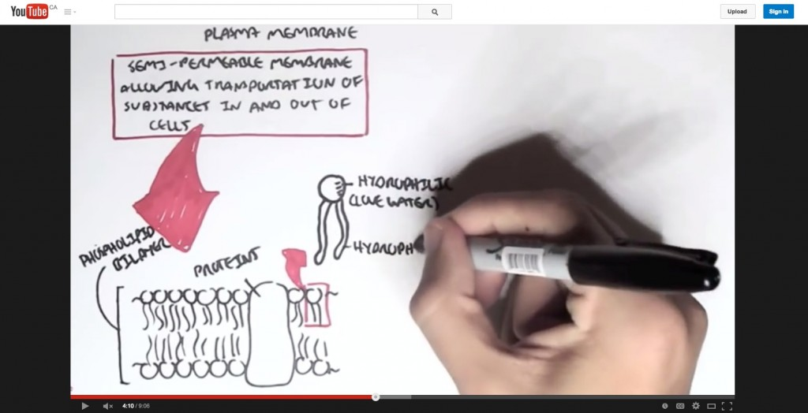
In Section 6.2, ‘A short history of educational technology‘, the development of different media in education was outlined, beginning with oral teaching and learning, moving on to written or textual communication, then to video, and finally computing. Each of these means of communication has usually been accompanied by an increase in the richness of the medium, in terms of how many senses and interpretative abilities are needed to process information. Another way of defining the richness of media is by the symbol systems employed to communicate through the medium. Thus textual material from an early stage incorporated graphics and drawings as well as words. Television or video incorporates audio as well as still and moving images. Computing now can incorporate text, audio, video, animations, simulations, computing, and networking, all through the Internet.
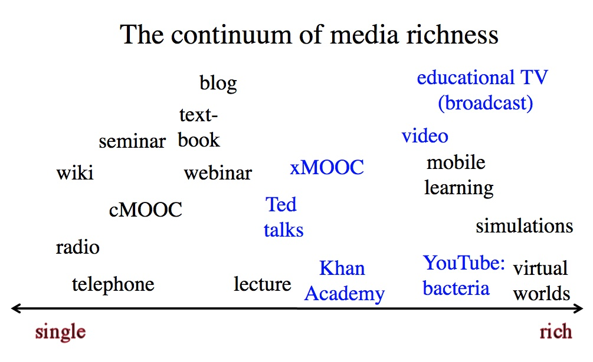
Once again then there is a continuum in terms of media richness, as illustrated in Figure 6.6.2 above. Also once again, design of a particular medium can influence where on the continuum it would be placed. For instance in Figure 6.6.2, different forms of teaching using video are represented in blue. Ted Talks are usually mainly talking heads, a televised lecture, as are often xMOOCs (but not all). The Khan Academy uses dynamic graphics as well as voice over commentary, and Armando Hasudungan’s You Tube video on the structure of bacteria uses hand drawings as well as voice over commentary. Educational TV broadcasts are likely to use an even wider range of video techniques.
However, although the richness of video can be increased or decreased by the way it is used, video is always going to be richer in media terms than radio or textbooks. Radio is never going to be a rich medium in terms of its symbols systems, and even talking head video is richer symbolically than radio. Again, there is no normative or evaluative judgment here. Radio can be ‘rich’ in the sense of fully exploiting the characteristics or symbol systems of the medium. A well produced radio program is more likely to be educationally effective than a badly produced video. But in terms of representation of knowledge, the possibilities of radio in terms of media richness will always be less than the possibilities of video.
But how rich should media be for teaching and learning? From a teaching perspective, rich media have advantages over a single medium of communication, because rich media enable the teacher to do more. For example, many activities that previously required learners to be present at a particular time and place to observe processes or procedures such as demonstrating mathematical reasoning, experiments, medical procedures, or stripping a carburetor, can now be recorded and made available to learners to view at any time. Sometimes, phenomena that are too expensive or too difficult to show in a classroom can be shown through animation, simulations, video recordings or virtual reality.
Furthermore, each learner can get the same view as all the other learners, and can view the process many times until they have mastery. Good preparation before recording can ensure that the processes are demonstrated correctly and clearly. The combination of voice over video enables learning through multiple senses. Even simple combinations, such as the use of audio over a sequence of still frames in a text, have been found more effective than learning through a single medium of communication (see for instance, Durbridge, 1984). The Khan Academy videos have exploited very effectively the power of audio combined with dynamic graphics. Computing adds another element of richness, in the ability to network learners or to respond to learner input.
From a learner’s perspective, though, some caution is needed with rich media. Two particularly important concepts are cognitive overload and Vygotsky’s Zone of Proximal Development. Cognitive overload results when students are presented with too much information at too complex a level or too quickly for them to properly absorb it (Sweller, 1988). Vygotsky’s Zone of Proximal Development or ZPD is the difference between what a learner can do without help and what can be done with help. Rich media may contain a great deal of information compressed into a very short time period and its value will depend to a large extent on the learner’s level of preparation for interpreting it.
For instance, a documentary video may be valuable for demonstrating the complexity of human behaviour or complex industrial systems, but learners may need either preparation in terms of what to look for, or to identify concepts or principles that may be illustrated within the documentary. On the other hand, interpretation of rich media is a skill that can be explicitly taught through demonstration and examples (Bates and Gallagher, 1977). Although YouTube videos are limited in length to around eight minutes mainly for technical reasons, they are also more easily absorbed than a continuous video of 50 minutes. Thus again design is important for helping learners to make full educational use of rich media.
It is a natural tendency when choosing media for teaching to opt for the ‘richest’ or most powerful medium. Why would I use a podcast rather than a video? There are in fact several reasons:
In general, it is tempting always to look for the simplest medium first then only opt for a more complex or richer medium if the simple medium can’t deliver the learning goals as adequately. However, consideration needs to be given to media richness as a criterion when making choices about media or technology, because rich media may enable learning goals to be achieved that would be difficult with a simple medium.
This is the last of the characteristics of media and technology that can influence decisions about teaching and learning. The next section will provide an overview and summary.
Bates, A. and Gallagher, M. (1977) Improving the Effectiveness of Open University Television Case-Studies and Documentaries Milton Keynes: The Open University (I.E.T. Papers on Broadcasting, No. 77)
Durbridge, N. (1984) Audio cassettes, in Bates, A. (ed.) The Role of Technology in Distance Education London: Routledge (re-published in 2014)
Sweller, J. (1988) Cognitive load during problem solving: effects on learning, Cognitive Science, Vol. 12
Vygotsky, L.S. (1987). Thinking and speech, in R.W. Rieber & A.S. Carton (eds.), The collected works of L.S. Vygotsky, Volume 1: Problems of general psychology (pp. 39–285). New York: Plenum Press. (Original work published 1934.)
I am aware that this chapter may appear somewhat abstract and theoretical, but in any subject domain, it is important to understand the foundations that underpin practice. This applies with even more force to understanding media and technology in education, because it is such a dynamic field that changes all the time. What seem to be the major media developments this year are likely to be eclipsed by new developments in technology next year. In such a shifting sea, it is therefore necessary to look at some guiding concepts or principles that are likely to remain constant, whatever changes take place over the years.
So in summary here are my main navigation stars, the main points that I have been emphasising, throughout this chapter.
Teaching in a Digital Age: Guidelines for designing teaching and learning by Dr. Tony Bates (CC BY-NC).
Photos: reproduced from the original open textbook (each figure is credited in its caption).
Design: HTML template based on work by HTML5 UP.
{kind=link}
{kind=link}